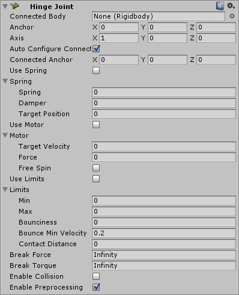

Hinge Joint
The Hinge Joint groups together two Rigidbodies, constraining them to move like they are connected by a hinge. It is perfect for doors, but can also be used to model chains, pendulums, etc.

Properties
| Property: | Function: |
|---|---|
| Connected Body | Optional reference to the Rigidbody that the joint is dependent upon. If not set, the joint connects to the world. |
| Anchor | The position of the axis around which the body swings. The position is defined in local space. |
| Axis | The direction of the axis around which the body swings. The direction is defined in local space. |
| Auto Configure Connected Anchor | If this is enabled, then the Connected Anchor position will be calculated automatically to match the global position of the anchor property. This is the default behavior. If this is disabled, you can configure the position of the connected anchor manually. |
| Connected Anchor | Manual configuration of the connected anchor position. |
| Use Spring | Spring makes the Rigidbody reach for a specific angle compared to its connected body. |
| Spring | Properties of the Spring that are used if Use Spring is enabled. |
| Spring | The force the object asserts to move into the position. |
| Damper | The higher this value, the more the object will slow down. |
| Target Position | Target angle of the spring. The spring pulls towards this angle measured in degrees. |
| Use Motor | The motor makes the object spin around. |
| Motor | Properties of the Motor that are used if Use Motor is enabled. |
| Target Velocity | The speed the object tries to attain. |
| Force | The force applied in order to attain the speed. |
| Free Spin | If enabled, the motor is never used to brake the spinning, only accelerate it. |
| Use Limits | If enabled, the angle of the hinge will be restricted within the Min & Max values. |
| Limits | Properties of the Limits that are used if Use Limits is enabled. |
| Min | The lowest angle the rotation can go. |
| Max | The highest angle the rotation can go. |
| Bounciness | How much the object bounces when it hits the minimum or maximum stop limit. |
| Contact Distance | Within the contact distance from the limit contacts will persist in order to avoid jitter. |
| Break Force | The force that needs to be applied for this joint to break. |
| Break Torque | The torque that needs to be applied for this joint to break. |
| Enable Collision | When checked, this enables collisions between bodies connected with a joint. |
| Enable Preprocessing | Disabling preprocessing helps to stabilize impossible-to-fulfil configurations. |
Details
A single Hinge Joint should be applied to a GameObject. The hinge will rotate at the point specified by the Anchor property, moving around the specified Axis property. You do not need to assign a GameObject to the joint's Connected Body property. You should only assign a GameObject to the Connected Body property if you want the joint's Transform to be dependent on the attached object's Transform.
Think about how the hinge of a door works. The Axis in this case is up, positive along the Y axis. The Anchor is placed somewhere at the intersection between door and wall. You would not need to assign the wall to the Connected Body, because the joint will be connected to the world by default.
Now think about a doggy door hinge. The doggy door's Axis would be sideways, positive along the relative X axis. The main door should be assigned as the Connected Body, so the doggy door's hinge is dependent on the main door's Rigidbody.
Chains
Multiple Hinge Joints can also be strung together to create a chain. Add a joint to each link in the chain, and attach the next link as the Connected Body.
Hints
- You do not need to assign a Connected Body to your joint for it to work.
- Use Break Force in order to make dynamic damage systems. You can use this to allow the player to damage the environment (for example, break a door off its hinges by blasting it with a rocket launcher or running into it with a car).
- The Spring, Motor, and Limits properties allow you to fine-tune your joint's behaviors.
- Use of Spring, Motor are intended to be mutually exclusive. Using both at the same time leads to unpredictable results.